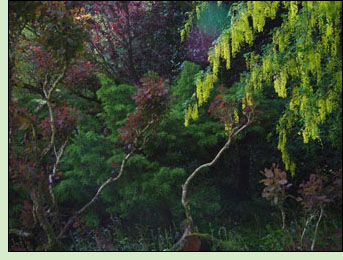

Archive
 SETTLING INTO THE CHOSEN POSTURE
3-day Residential, November 30-December 2, 2007, Tampa
BODY ESTABLISHING ITSELF IN THE POSTURE
(Saturday morning, December 1)
RELAXING INTO SENSATIONS
(Saturday afternoon, December 1)
POINTING OUT THE POSSIBILITY OF SEEING CLEARLY
(Sunday morning, December 2)
3-day Residential, March 14-16,
2008, Tampa
RESTING INTO POINTS OF CONTACT (Friday afternoon, March 14)
BECOMING SETTLED INTO THE PHYSICAL BODY (Saturday morning, March 15)
ESTABLISHING STEADINESS OF POSTURE (Saturday afternoon, March 15)
ALLOWING WHAT IS TO BE AS IT IS (Sunday monring, March 16)
3-day Residential, May 9-11, 2008, Tampa
ALLOWING THE BODY TO FULLY SETTLE (Saturday morning, May 10)
SILENCE & STILLNESS (Saturday afternoon, May 10)
THE SENSE OF TIME (Sunday morning, May 11)
1-day Retreat, June 21, 2008, Micanopy
IN THE BENEVOLENCE OFSILENCE & STILLNESS
3-day Residential, October 3-5, 2008, Tampa
RELAXING WITH OPENNESS TO WHATS HERE (Friday afternoon, October 3)
TAKING THE ONE SEAT (Saturday morning, October 4)
REFRESHING THE COMMITMENT TO STILLNESS (Saturday afternoon, October 4)
RELAXING INTO STILLNESS (Sunday morning, October 5)
1-day Retreat, February 28, 2009, Micanopy
NOT MOVING AWAY
3-Day Silent Retreat, April 3-5, 2009, Tampa
FRIDAY AFTERNOON | SATURDAY MORNING | SATURDAY AFTERNOON | SUNDAY MORNING
3-Day Silent Retreat, October 2-4, 2009, Tampa
FRIDAY AFTERNOON | SATURDAY MORNING | SATURDAY AFTERNOON | SUNDAY MORNING
3-Day Silent Retreat, December 4-6, 2009, Tampa
FRIDAY AFTERNOON | SATURDAY MORNING | SATURDAY AFTERNOON | SUNDAY MORNING
3-Day Silent Retreat, March 19-21, 2010, Tampa
FRIDAY AFTERNOON | SATURDAY MORNING
5-day Silent Retreat, March 14-18, 2012, Tampa
Thursday morning
(day 2)
Friday morning
(day 3)
Friday afternoon
(day 3)
5-day Silent Retreat, March 10-14, 2011, Tampa
Friday morning, March 11
(day 2)
Friday afternoon, March 11
(day 2)
Saturday morning, March 12
(day 3)
|